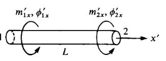

Materyel Mekaniği - 10
Izgara Denklemleri
Yapısal mekanikte ızgara yüklerin dik uygulandığı bir sistemdir. Izgaranın öğelerinin katı (rigid) şekilde bağlandığı farz edilir, yani ögelerin birbirine bağlandığındaki açılar aynı kalır. Düğüm noktalarında burumsal ve bükülme momentleri süreklilik gösterir. Izgara örnekleri bir evin tabanı (floor) ya da bir köprünün alt yüzeyi olabilir [3, sf. 262].
Ama ızgara denklemlerine detaylı giriş yapmadan önce Galerkin, ve şekil fonksiyonları (shape function) konusuna bakalım.
Alttaki gibi bir denklem düşünelim,
$$ E I \frac{\mathrm{d}^4 y}{\mathrm{d} X_1^4} = q \qquad (1) $$
Biraz düzenleme sonrası
$$ E I \frac{\mathrm{d}^4 y}{\mathrm{d} X_1^4} - q = 0 $$
elde ederim. Amacım öyle bir yaklaşık $y$, ya da $y_{approx}$ diyelim, bulmak ki üstteki denklemi çözebileyim. Bunu $y$ yerine onu yaklaşık temsil edebilen bir diğer fonksiyonu geçirerek yapabilirim. Bir polinom bu işi görebilir; Pek çok diğer yöntemin kullandığı tipik bir polinom vardır,
$$ y_{approx} = a_0 + a_1 X_1 + a_2 X_1^2 $$
diye gider, aslında daha genel olarak olan her terimde "bir katsayı çarpı $X_1$'in bir tür fonksiyonu" gibi bir toplam kullanmak daha iyi olabilir, bu formda,
$$ y_{approx} = a_0 \phi_0(X_1) + a_1 \phi_1(X_1) + a_2 \phi_2(X_1) $$
Daha kısa olarak
$$ y_{approx} = \sum_{i=0}^{n} a_i \phi_i(X) $$
Dikkat $\phi_i(X)$ içinde $X$ var bu $X = X_1,X_2,..,X_n$ anlamında, cebirsel olarak her $\phi$ fonksiyonuna $X$ geçildiğini düşünebiliriz ama her $\phi_i$ tüm $X$ öğelerini kullanmayabilir; üstteki polinom örneğinde mesela $\phi_1$ fonksiyonu sadece $X_1$'i kullanarak bir hesap yapar, diğerleri diğer şekillerde.
Not, $y_{approx}$ gerekli (essential) sınır şartlarını yerine getirmelidir.
Şekil Fonksiyonları (Shape Functions)
Diyelim ki bir çubuğa bakıyorum ve onun üzerinde iki tane düğüm tanımladım, düğümlerden biri $X_1 = x_1$ noktasında diğeri $X_2 = x_2$ noktasında.

Ve yine diyelim ki bu iki düğümdeki yer değişimi $u_i$ değerlerini biliyorum, eldeki örnek için $u_1$ ve $u_2$, kabaca alttaki gibi olsun,

Şekle gelelim; eğer bu iki düğüm üzerinden bir lineer bağlantı kullanmak istiyorsam yani iki düğüm arasında aradeğerleme yapacak fonksiyon lineer olsun diyorsam, yapılacak olan bariz aslında,

Aradeğerleme $u_e$ bu şekilde. Peki o fonksiyonda bilinmeyen $a_0,a_1$ nasıl bulunacak? Biz nihai sonuç olarak bu katsayılarla ilgilenmiyoruz, bizi tek ilgilendiren yer değişim fonksiyonu, bunu belirtmiştik. O zaman üstteki fonksiyonu $u_1,u_2$ temelli olarak tekrar yazabilir miyiz acaba? Eğer $x_1$ noktasında fonksiyon değeri $u_1$, $x_2$ noktasında $u_2$ ise,
$$ u(x_1) = a_0 + a_1 x_1 = u_1 $$
$$ u(x_2) = a_0 + a_1 x_2 = u_2 $$
İki bilinmeyen var, iki denklem var, çözüm [1, Ders 2]
$$ a_0 = \frac{u_2 x_1 - u_1 x_2}{L}, \qquad a_1 = \frac{u_2 - u_1}{L} $$
$L$ kırmızı ile gösterilen parçanın uzunluğu sadece, yani $x_2 - x_1$.
Üstteki $a_0,a_1$ değerlerini nasıl bulduğumuzu merak edenler için
$$ u(x_1) = a_0 + a_1 x_1 = u_1, \quad u(x_2) = a_0 + a_1 x_2 = u_2 $$
ile başlarız, ikinci formülden birinciyi çıkartırsak,
$$ (x_2 - x_1) a_1 = u_2 - u_1 \to a_1 = \frac{u_2 - u_1}{L} $$
ki $L = x_2 - x_1$
$a_0$'i bulmak için birinci formüldeki $a_1$'i alıp, yani $a_1 = \frac{u_1 - a_0}{x_1}$, ikinciye sokuyoruz,
$$ a_0 + \frac{\frac{u_1 - a_0}{x_1}}{x_1} x_2 = u_2 $$
$$ x_1 a_0 + u_1 x_2 - a_0 x_2 = u_2 x_2 $$
$$ u_1 x_2 - u_2x_1 = -a_0 x_1 + a_0 x_2 $$
$$ = a_0 (x_2 - x_1) = a_0 L $$
$$ a_0 = \frac{u_1 x_2 - u_1 x_2}{L} $$
Devam edelim.
$a_0,a_1$ degerlerini $u_e$ icine koyunca,
$$ u = \frac{u_2 x_1 - u_1 x_2}{L} - \frac{u_2 - u_1}{L} X_1 $$
Biraz daha cebirsel değiştirme sonrası
$$ u = \frac{(x_2 - X_1)}{L} u_1 + \frac{(X_1 - x_1)}{L} u_2 $$
Bu son değişimi yaptık çünkü bu formda dikkat edersek denklem daha önce gördüğümüz Galerkin deneme fonksiyonlarına benziyor,
$$ u = u_1 \phi_1(X_1) + u_2 \phi_2 (X_1) $$
kalıbında görüldüğü gibi. Deneme fonksiyonlarında $u_1,u_2$ sabit değerlerdi, bu bölümde gördüğümüz $u_i$ değerleri de öyle aslında. Bilinen $u_i$ değerlerini yaklaşık temsile uğraşıyoruz, gerçi çözüm mekaniği içinde o $u$ değerleri de hesaplanıyor fakat bu belli formülasyonlar için onların bilindiği farzedilebilir.
Şimdi $\phi_1,\phi_2$ fonksiyonları bizim önceden seçtiğimiz fonksiyonlardı, polinom seçtiğimizde $X_1,X_1^2$ gibi hesaplar kullandık. Üstteki türetim sonrası $N_1,N_2$ var, ve ulaştığımız fonksiyonlar
$$ N_1 = \frac{(x_2 - X_1)}{L}, \quad N_2 = \frac{(X_1 - x_1)}{L} $$
Bu şekil fonksiyonları neye benziyor acaba? Alttaki gibi,

Bu iki fonksiyonu üst üste koyduğumuzda (superimpose) yani topladığımızda, sonucun mavi çizgiyi aynen vereceğini görebilirdik.
İlginç bir diğer özellik, eğer mesela $N_2$'ye tek başına bakarsam, onun ilk düğümde 0 değerinde, ikinci düğümde 1 değerinde olduğunu görebiliriz. Eğer $N_3$ olsa bu şekil de birinci ve ikinci düğümde sıfır olurdu. Diğer yandan her şekil fonksiyonu ait olduğu düğümde 1 değerindedir. $N_1$ birinci düğümde 1 değerinde, $N_2$ ikinci düğümde 1 değerinde, vs. Bu şekil fonksiyonları öyle tasarlanmıştır.
Fakat üstteki türetimden daha basit olanı iki noktadaki farkı uzunluğa bölmek, ve $x$ ile çarpıp başlangıç değerine eklemek. Altta bu teknik kullanılacak.
Şimdi ızgara formüllerine dönelim. Bu sistemin öğelerinin katı (rigid) şekilde bağlandığını söylemiştik, yani öğelerin birbirine bağlandığındaki açılar aynı kalır, düğüm noktalarında burumsal ve bükülme momentleri süreklilik gösterir. O zaman bu tür bir ızgaranın her ögesinin her ucunda 3 olmak üzere 6 derece serbestliği olacaktır.

Değişkenlere bakarsak, sol uçta mesela $v'_1$ var, bu yer değişimi. Bir diğer değişken $\phi'_{1z}$ bükülme açısı, notasyonel olarak hangi eksen etrafında dönüldüğünü değişkene yazıyoruz. Sol kısım için üçüncü değişken yine dönüş açısı, ama bu seferki burulma sebebiyle ortaya çıkıyor, $x$ ekseni etrafında bu sebeple ona $\phi'_{1x}$ diyoruz. Aynı notasyonu sağ kısma uyguluyoruz, $v'_2$, $\phi'_{2z}$ ve $\phi'_{2x}$ elde ediyoruz.
Burulma icin alttaki çubuğu düşünelim [3, sf. 264],

Eğer bir $\phi'$ açısı 1 noktasında $\phi'_{1x}$ 2 noktasında $\phi'_{2x}$ olsun istiyorsak ve aradaki değişim lineer ise,
$$ \phi' = \left( \frac{\phi'_{2x} - \phi'_{1x}}{L} \right) x' + \phi'_{1x} \qquad (2) $$
Eğer şekil fonksiyonu $N_1,N_2$ kullanmak istersek ki her iki fonksiyon sırasıyla $x'$ değişkeninin birer fonksiyonu, yani
$$ \phi' = N_1 \phi'_{1x} + N_2 \phi'_{2x} $$
olacak şekilde, o zaman
$$ N_1 = 1 - \frac{x'}{L}, \quad N_2 = \frac{x'}{L} $$
ile bunu yapabilirdik. Matris formunda
$$ \phi' = [\begin{array}{cc} N_1 & N_2 \end{array}] \left[\begin{array}{c} \phi'_{1x} \\ \phi'_{2x} \end{array}\right] $$

Maksimum kesme (shear) gerginliğini bulmak için daha önceki formülü hatırlayalım,
$$ \gamma_{max} = \frac{R \mathrm{d} \phi'}{\mathrm{d} x'} $$
Herhangi bir $r$ yarıçapı için
$$ \gamma = \frac{r \mathrm{d} \phi'}{\mathrm{d} x'} $$
Üstteki formüle (2)'deki ifadeyi sokarsak,
$$ \gamma = \frac{r \mathrm{d} \phi'}{\mathrm{d} x'} = \frac{r}{L} ( \phi'_{2x} - \phi'_{1x} ) \qquad (3) $$
[2] dersinde görmüştük ki Burulma Formülü (Torsion Formula)
$$ \tau = \frac{T\rho}{I_P} $$
[3, sf. 265] notasyonu ile belirtirsek
$$ \tau = \frac{m'_x R}{J} $$
Ya da
$$ m'_x = \frac{\tau J}{R} $$
Lineer elastik eşyönlü (isotropic) materyeller için kesme stresi $\tau$ ve kesme gerginliği $\gamma$ arasındaki ilişkiyi
$$ \tau = G \gamma $$
olarak biliyoruz. Üstteki formülü iki üsttekine sokunca,
$$ m'_x = \frac{G J}{R} \gamma $$
Bu formüle (3)'ü sokarsak,
$$ m'_x = \frac{G J}{R} \frac{R}{L} ( \phi'_{2x} - \phi'_{1x} ) $$
$$ m'_x = \frac{G J}{L} ( \phi'_{2x} - \phi'_{1x} ) $$
Son bulduğumuz formül $1x,2x$ ifadeleri içeriyor fakat aslında genel bir $x$ için bu hesap yapıldı. Eğer gerçekten 1 noktasındaki torku hesaplamak istiyorsak (resmi tekrar paylaşalım),
Formül,
$$ m'_{1x} = \frac{G J}{L} ( \phi'_{1x} - \phi'_{2x} ) $$
Dikkat edersek 1 eksi 2 yazdık, burulma açısı 2'ye giderken büyüyecek, 1'de sabit. 2 noktası için [4],
$$ m'_{2x} = \frac{G J}{L} ( \phi'_{2x} - \phi'_{1x} ) $$
Son iki formülü matris formunda yazabiliriz,
$$ \left[\begin{array}{c} m'_{1x} \\ m'_{2x} \end{array}\right] = \frac{GJ}{L} \left[\begin{array}{rr} 1 & -1 \\ -1 & 1 \end{array}\right] \left[\begin{array}{c} \phi'_{1x} \\ \phi'_{2x} \end{array}\right] \qquad (5) $$
Demek ki direngenlik matrisi eşitliğin sağındaki ortada kalan bölümdür. Bu matris burulma (torsion) etkilerini gösteriyor, etkiler tek bir kiriş öğesi temel alınarak hesaplandı.
Eğer burulma etkilerini bükülme (bending) ve kesme stres etkileriyle birleştirmek istiyorsak [5]'teki formülü kullanabiliriz, hatırlarsak bu formüldeki direngenlik matrisi, yine tek bir kiriş öğesi için, şöyleydi,
$$ \frac{EI}{L^3} \left[\begin{array}{cccc} 12 & 6L & -12 & 6L \\ 6L & 4L^2 & -6L & 2L^2 \\ -12 & -6L & 12 & -6L \\ 6L & 2L^2 & -6L & 4L^2 \end{array}\right] \qquad (4) $$
Matris bir değişken listesini referans alıyor muhakkak, bu liste daha önce göstermiştik ki $f_{1y}, m_1, f_{2y}, m_2$, yer değişim için $v_1, \phi_1, v_2, \phi_2$.
Bize gereken (5)'teki burulma mantığını (4)'teki bükülme ve yer değişim mantığı ile birleştirmek. Bu birleşmiş eşitliğin solunda, kirişin bir tarafı için eksene dik yer değişim kuvveti, burulma torku ve bükülme momenti, $f'_{1y}$, $m'_{1x}$, $m'_{1z}$ olacak, öğenin sağ kısmı için benzer durum, $f'_{2y}$, $m'_{2x}$, $m'_{2z}$. Eşitliğin sağında, direngenlik matrisini çarpacak yine 6 değişken var, bunlar $v'_1$, $\phi'_{1x}$, $\phi'_{1z}$, $v'_2$, $\phi'_{2x}$, $\phi'_{2z}$. Üstdüşüm ile birleştirme için değişken listesini 1, 2, 3, 4, 5, 6 diye etiketlesem, o zaman 1, 3, 4, 6 değişkenleri (4)'ten 2, 5 değişkenleri (5)'ten geliyor olurdu. Birleşmiş sistem,
$$ \left[\begin{array}{c} f'_{1y} \\ m'_{1x} \\ m'_{1z} \\ f'_{2y} \\ m'_{2x} \\ m'_{2z} \end{array}\right] = \left[\begin{array}{cccccc} \dfrac{12 EI}{L^3} & 0 & \dfrac{6 EI}{L^2} & \dfrac{-12EI}{L^3} & 0 & \dfrac{6EI}{L^2}\\ & \dfrac{GJ}{L} & 0 & 0 & \dfrac{-GJ}{L} & 0 \\ & & \dfrac{4EI}{L} & \dfrac{-6EI}{L^2} & 0 & \dfrac{2EI}{L} \\ & & & \dfrac{12EI}{L^3} & 0 & \dfrac{-6EI}{L^2} \\ & & & & \dfrac{GJ}{L} & 0 \\ & & & & & \dfrac{4EI}{L} \end{array}\right] \left[\begin{array}{c} v'_1 \\ \phi'_{1x} \\ \phi'_{1z} \\ v'_2 \\ \phi'_{2x} \\ \phi'_{2z} \end{array}\right] $$
Üstteki matris simetriktir, bu sebeple sol alt kısmı boş bıraktık, üst sağ kısım ile simetriktir. Direngenlik matrisi $k'$ ortadaki 6x6 matrisi olarak kabul edilebilir.
Izgarayı yerel kordinat sisteminden globala çeviren transform matrisi ise alttadır,
$$ T_G = \left[\begin{array}{cccccc} 1 & 0 & 0 & 0 & 0 & 0 \\ 0 & C & S & 0 & 0 & 0 \\ 0 & -S & C & 0 & 0 & 0 \\ 0 & 0 & 0 & 1 & 0 & 0 \\ 0 & 0 & 0 & 0 & C & S \\ 0 & 0 & 0 & 0 & -S & C \end{array}\right] $$
ki buradaki $\theta$ $x$ ve $x'$ arasındaki acıdır, $i$,$j$ düğümlerini baz alacak şekilde figür altta gösteriliyor,

$C$ ve $S$ her öge için hesaplanır, $j$ öğenin üç noktası $i$ başlangıç noktası ise,
$$ C = \cos\theta = \frac{x_j - x_i}{L}, \quad S = \sin\theta = \frac{z_j - z_i}{L}, $$
O zaman global direngenlik matrisi $k$ şu formül olacaktır [3, sf. 269],
$$ k = T_G^T k' T_G $$
Problem
Alttaki ızgara sistemini analiz edin [3, sf. 265], ızgarada üç tane öğe var, sistem düğüm 2, 3 ve 4 noktasında sabitlenmiş halde, ve sisteme dikey yönde 100 kip büyüklüğünde bir kuvvet uygulanıyor. Global kordinat sistemi düğüm 3 merkezlidir (o nokta orijin, [0,0,0] kabul edilebilir). Tüm öğeler için $E = 30 \times 10^3$ ksi, $G = 12 \times 10^3$ ksi, $I = 400$ inch, $J = 110$ inch olsun.

Çözüm
Bu probleme yaklaşım [6]'dakine benziyor, şekle bakarak öğe öğe $k$ matrislerini oluşturuyoruz (üç tane), ve her ögenin değişkenlerini bu öğelerin üç noktalarına bakarak isimlendiriyoruz. Sonra her $k$ matrisini tüm değişken listesine genişleterek bu genişletilmiş matrisleri birbiri ile topluyoruz (üstdüşümleme), çünkü bu noktada matrisler aynı değişken listesine tekabül ediyorlar. Bu şekilde bir lineer cebir $Ax = b$ sistemi yaratmış oluyoruz ve bu sistemi lineer cebirle çözüyoruz. Eğer varsa çözümden önce sıfır olan değişkenleri (sınır şartları) ana matristen atıyoruz, böylece boyutu daha küçük bir sistem elde ediliyor (neredeyse tüm problemlerde böyle şartlar vardır), ve çözüm daha basitleşiyor.
Önce k matrisini sembolik, cebirsel olarak yaratalım,
import pandas as pd
from sympy import symbols, latex, simplify
from sympy.matrices import Matrix
pd.set_option('display.max_columns', None)
G,J,C,S,L,E,I = symbols("G,J,C,S,L,E,I")
kprime = Matrix([[12*E*I/L**3, 0, 6*E*I/L**2, -12*E*I/L**3, 0, 6*E*I/L**2],
[0, G*J/L, 0, 0, -G*J/L, 0],
[6*E*I/L**2, 0, 4*E*I/L, -6*E*I/L**2, 0, 2*E*I/L],
[-12*E*I/L**3, 0, -6*E*I/L**2, 12*E*I/L**3, 0, -6*E*I/L**2],
[0, -G*J/L, 0, 0, G*J/L, 0],
[6*E*I/L**2, 0, 2*E*I/L, -6*E*I/L**2, 0, 4*E*I/L]
])
T_G = Matrix([[1,0,0,0,0,0],
[0,C,S,0,0,0],
[0,-S,C,0,0,0],
[0,0,0,1,0,0],
[0,0,0,0,C,S],
[0,0,0,0,-S,C]])
k_G = T_G.transpose()*kprime*T_G
Her öge için $E,G,I,J$ değişkenleri aynı, değişik olabilecek büyüklükler $C,S$ ve $L$. Ana sabitleri bir sözlük içine koyalım, farklı olan büyüklükleri onun üzerine ekleriz,
d = {E:30000.0, G: 12000, I: 400, J: 110}
Öğe 1
Resme bakarak 1 öğesinin uzunluğu $L$ nedir? Bir kenarı 20 ft diğer kenarı 10 ft olan bir üçgen var orada, o zaman $L = \sqrt{ 20^2 + 10^2} = 22.36$ ft. İnch dönüşümü için 12 ile çarpmak lazım, 1 ft = 12 inch. $C$ ve $S$ için
$$ C = \cos\theta = \frac{x_2-x_1}{L} = -20-0 / 22.36 = -0.894 $$
$$ S = \sin\theta = \frac{z_2-z_1}{L} = 10-0 / 22.36 = 0.447 $$
d1 = d.copy(); d1.update({L:22.36*12, C:-0.894, S: 0.447})
df1 = k_G.subs(d1)
df1 = pd.DataFrame(np.array(df1).astype(np.float64))
df1.columns = ['v1','phi1x','phi1z','v2','phi2x','phi2z']
Dikkat değişken isimleri öğenin uçlarındaki düğüm sayılarından geliyor. Öğe 1'in sonunda 2 düğümü, başında 1 düğümü var, bu sebeple buradaki $k$ matrisinin değişkenleri $v_1,\phi_{1x},\phi_{1z},v_2,\phi_{2x},\phi_{2z}$ olmalı.
Öğe 2
$$ C = \frac{x_3-x_1}{L} = -20-0 / 22.36 = -0.894 $$
$$ S = \frac{z_3-z_1}{L} = -10-0 / 22.36 = -0.447 $$
Aynı $L$ değişkenini kullandık büyüklük 1 öğesi ixle aynı çıktı fakat farklı olabilirdi, her ögenin uzunluğu değişik olabilir.
d2 = d.copy(); d2.update({L:22.36*12, C:-0.894, S: -0.447})
df2 = k_G.subs(d2)
df2 = pd.DataFrame(np.array(df2).astype(np.float64))
df2.columns = ['v1','phi1x','phi1z','v3','phi3x','phi3z']
Öğe 3
$$ C = \frac{x_4-x_1}{L} = 20-20 / 10 = 0 $$
$$ S = \frac{z_4-z_1}{L} = 0-10 / 10 = -1 $$
d3 = d.copy(); d3.update({L:10*12, C:0, S: -1})
df3 = k_G.subs(d3)
df3 = pd.DataFrame(np.array(df3).astype(np.float64))
df3.columns = ['v1','phi1x','phi1z','v4','phi4x','phi4z']
Öğelerin $k$ matrisleri tamamlandı. Şimdi genişletme, toplama ve gereksiz değişkenleri çıkartma aşamasına geldik.
[6]'daki kod fonksiyonlarını tekrar verelim, bu fonksiyonlar değişken genişletme, ve değişken atma işlemlerini yapacak,
def expand_dataframe(dfarg, new_cols):
res = dfarg.copy()
old_cols = list(dfarg.columns)
addn_vars = [x for x in new_cols if x not in old_cols]
res.index = dfarg.columns
for x in addn_vars:
res[x] = np.nan
res.loc[x] = pd.Series(res.columns)
res = res[new_cols]
res = res.reindex(new_cols).fillna(0)
return res
def drop_col_row(df, var_list):
res = df.copy()
for x in var_list:
res = res.drop(x,axis=1)
res = res.drop(x,axis=0)
return res
Altta her üç $k$ matrisini bu problemin ana değişken listesini tanımlayarak genişletiyoruz, ve toplamayı yapıyoruz, sonra toplam matrisinden gereksiz değişkenleri çıkartıyoruz.
all_vars = ['v1','phi1x','phi1z','v2','phi2x','phi2z','v3','phi3x','phi3z','v4','phi4x','phi4z']
df1f = expand_dataframe(df1,all_vars)
df2f = expand_dataframe(df2,all_vars)
df3f = expand_dataframe(df3,all_vars)
dfall = df1f + df2f + df3f
dfall = drop_col_row(dfall, ['v2','phi2x','phi2z','v3','phi3x','phi3z','v4','phi4x','phi4z'])
print (dfall)
v1 phi1x phi1z
v1 98.241813 5000.000000 -1788.108717
phi1x 5000.000000 479351.695886 0.000000
phi1z -1788.108717 0.000000 298917.977639
Nihai $k$ matrisin elde ettik. Şimdi,
$$ \left[\begin{array}{c} F_{1y} = -100 \\ M_{1x} = 0 \\ M_{1z} = 0 \end{array}\right] \left[\begin{array}{ccc} 98.241813 & 5000.000000 & -1788.108717 \\ 5000.000000 & 479351.695886 & 0.000000 \\ -1788.108717 & 0 & 298917.977639 \end{array}\right] \left[\begin{array}{c} v_1 \\ \phi_{1x} \\ \phi_{1z} \end{array}\right] $$
import numpy.linalg as lin
b = np.array([-100.0,0,0])
x = lin.solve(dfall, b)
print (x)
[-2.82552252 0.02947233 -0.0169021 ]
Sonuç bulundu, $v_1 = -2.8255$ in, $\phi_{1x} = 0.02947$ rad, $\phi_{1z} = -0.01690$ rad.
Sonuçlara bakınca düğüm 1'in $y$ yönündeki yer değişiminin alta doğru olduğunu anlıyoruz, çünkü sonucun işareti negatif. $x$ ekseni etrafındaki dönüş pozitif, $z$ ekseni etrafındaki ise negatif. Alt yöne doğru olan yükü göz önünde tutunca bu sonuç beklenmez değil.
Her öge üzerinde etki eden kuvvetleri $f' = k'_G T_G d$ ile bulabiliriz, biraz önce hesapladığımız $d$ vektörüdür, $T_G,k'_G$ zaten biliniyor, çarpımı yapınca gerekli sonuçlar elde edilir.
Kaynaklar
[1] Petitt, Finite Element Method Theory, University of Alberta, https://www.youtube.com/watch?v=2iUnfPRk6Ro&list=PLLSzlda_AXa3yQEJAb5JcmsVDy9i9K_fi
[2] Bayramlı, Fizik, Materyel Mekaniği 9
[3] Logan, A First Course in the Finite Element Method, 6th Ed
[4] Barsoum, 5 4 Grid Element Equations and Stiffness Matrix, https://youtu.be/Jejd1UGqq1s
[5] Bayramlı, Fizik, Materyel Mekanigi 7
[6] Bayramlı, Fizik, Materyel Mekanigi 8
Yukarı